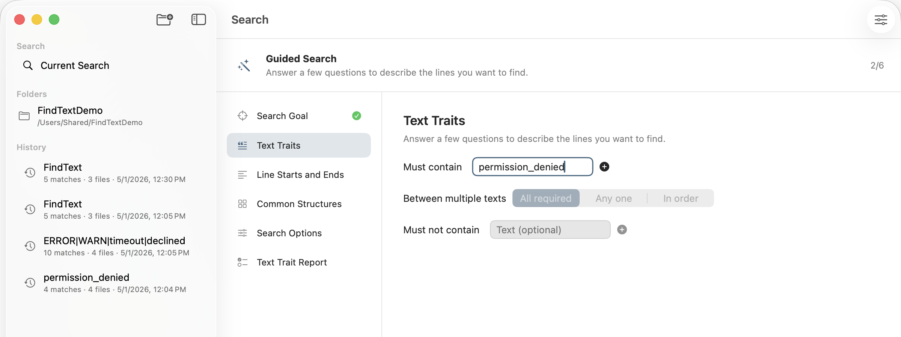

Choose the intent
Start with matching or not matching lines, so inverse searches are available without memorizing command-line flags.

Local-first search for macOS
FindText PRO gives everyday file search a calm Mac interface: use Question Mode when you do not know regex, or switch to precise controls for notes, Markdown, reports, configs, logs, and code.
Question Mode walks you through a search in plain language, so you can find text without writing a regular expression.
Grouped results with file names, line numbers, highlights, history, and exportable reports.
Selectable previews for careful bulk edits, with file-change checks and a session undo snapshot.
Question Mode
Question Mode is not a chatbot and it does not upload files. It turns a few clear answers into a deterministic local search: what kind of lines to include, which text traits they must contain, where those traits appear, and how the results should be scoped and displayed.
Start with matching or not matching lines, so inverse searches are available without memorizing command-line flags.
Add words or phrases that must appear, phrases that must be excluded, and whether multiple traits are all required, any one, or in order.
Refine starts, endings, indentation, and common structures such as dates, emails, IP addresses, TODOs, or error terms.
Confirm the generated criteria, scope, file types, skipped folders, case behavior, and output format before running the search.
How it works
The flow keeps the mental model visible: every answer becomes a search constraint, and the final report shows the assembled rule before FindText PRO scans your local folders.
Step 1 of 6
The first decision maps to positive or inverse search. Users can ask for lines matching described traits, or lines that do not match those traits, without needing grep flags or regex syntax.
Built for repeated work
FindText PRO helps ordinary Mac users search through questions and plain text, while giving developers, writers, QA teams, and support engineers the deeper controls they expect.
Use Question Mode when you know what you want to find but do not know how to express it as a regular expression.
See matches grouped by file with line numbers and highlights, then collapse noisy groups when a large folder turns up hundreds of hits.
Save recurring searches for monthly documents, project folders, support cases, or code audits, and reopen history snapshots without running the search again.
Preview every candidate by file and occurrence, select only what should change, and avoid accidental edits when renaming terms across many files.
Copy matching text, whole lines, or file locations with line numbers, then export a report for a teammate, customer, or future self.
Search one or many folders, include only selected file types, skip cluttered directories, and search extracted .docx text when macOS can read it.
Less context switching
FindText PRO works for simple "where did I write that?" searches and for deeper inspections that need proof. It is especially useful when a quick lookup turns into a document cleanup, change list, release check, support investigation, or code review.
Product screenshots
These views are captured from an English demo workspace with synthetic notes, docs, configs, logs, and code. Question Mode is designed for users who do not know regular expressions; regex remains available for advanced searches.
Type a word, phrase, identifier, or error message, then review grouped matching lines with highlights and file context.
Privacy and safety
FindText PRO is local-first by design. The current app behavior does not collect data, track users, create cloud indexes, or upload file content. Folder access is granted through the macOS sandbox and stored as security-scoped bookmarks.
The app privacy manifest declares no collected data and no tracking domains.
Batch replacement requires a preview, supports per-file and per-occurrence selection, and checks original text before applying changes.
Imported folders, bookmarks, presets, history, and replacement records stay in this Mac's app data and can be removed by the user.
Simple pricing
Start with a 7-day free trial, then pay once to unlock every feature forever.
7-day free trial, then a US$2.99 one-time purchase for permanent full access.
FAQ
No. Search runs locally on your Mac. Queries, file paths, and file content are not sent to a server by the current app features described here.
Yes. Run a search first, prepare a replacement preview, choose the files or occurrences to change, and confirm before anything is written.
No. Question Mode is built for users who do not know regex. It guides the search with plain prompts, while regex and presets remain available when you want advanced pattern matching.
Search results can be exported as Markdown, CSV, JSON, or plain text. You can also copy matching text, whole lines, or file paths with line numbers.
Yes. Add included extensions such as .md, .txt, .log, .swift, or .docx. If the list is empty, FindText PRO searches readable text files that are not skipped by your rules.